|
|
| index of concepts |
| Eating
on the shores feeding methods updated Dec 2019
Animals on our shores eat things which might appear strange to us. And have equally strange, but ingenious, ways to get their food. 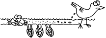 Delicious detritus: Detritus is a polite word for dung and decaying matter. Detritus is made up mostly of dead plants and tiny animals that have broken down into bits. Detritus is a rich source of nutrients much like fertiliser in a garden. Living animals contribute detritus when they deposit dung or drop off parts of their body such as feathers and skin.Yummy Plankton: Tiny plankton is another popular food item. Plankton refers to all animals that drift in the ocean. While a few can be enormous (like jellyfishes), most plankton are microscopic plants and animals that drift with the water currents. This includes algae such as diatoms as well as the tiny larvae of larger animals. Microscopic larvae drift with the currents to disperse to new places where they settle down and grow into large adults. Most however, never make it to adulthood as they are eaten by plankton feeders. Typical microscopic larvae of some animals of our shores don't look anything like the adults! Plankton also comprises animals that remain microscopic all their lives, such as copepods.
|


How to eat plankton? There are two main ways to eat detritus and plankton: deposit feeding and suspension feeding. |
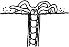 Deposit feeders collect the particles that settle on the sea bottom. Buried worms gather detritus from the surface with their tentacles.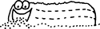 Sea cucumbers swallow and process sediments for detritus. |
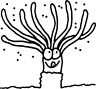 Suspension feeders collect the bits suspended in the water. Cerianthids use their tentacles to collect detritus suspended in the water. |
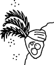 Filter feeders are suspension feeders that collect bits suspended in the water by actively creating a current of water through their bodies or by using body parts as a sieve.Barnacles filter the water with their feathery feet, kicking the edible bits into their mouths. |
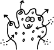 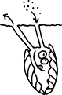 Sponges and clams filter feed by sucking water into their bodies and then sieving out the edible particles. |
 Feeding tentacles of a sea cucumber |
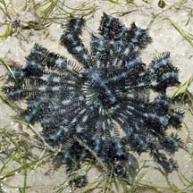 Feather stars gather tiny edible bits from the water with their feathery arms. |
 Barnacles have feathery legs to gather edible bits from the water. |
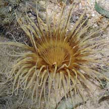 Cerianthids gather bits fromthe water with their tentacles. |
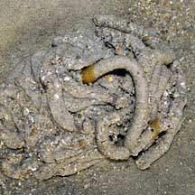 The acorn worm processes sand for edible bits, producing coils of processed sand. |
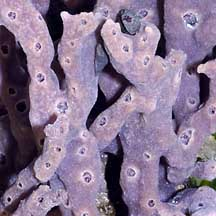 Sponges generate a current of water through the porous body to extract tiny edible bits. |
‘Normal’ diets: Many animals on our shores have diets that are less strange to us. Carnivores are flesh-eating animals. There are two main types of flesh-eaters: predators and scavengers. Predators actively hunt, kill and eat animals. Predators don't have to be large. An example of a small predator is the Drill, a snail that eats barnacles. Scavengers don't hunt or kill. They simply eat any animals that are already dead. Scavengers include crabs and prawns. Herbivores eat plants. On our shores, the plants are not huge trees but are seagrasses, seaweeds and smaller algae. Animals large and small munch on these plants. These include slugs and fishes. Omnivores eat both plants and animals. They usually eat a wide variety of food. We are omnivores! |